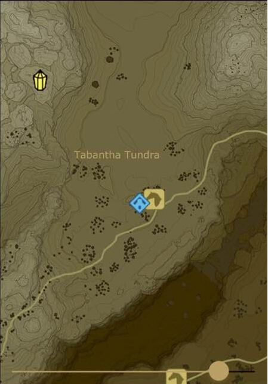

塞尔达传说荒野之息游戏中怎么刷星?其实方法有很多种，今天给大家分享的是最快最简单的方法，一起来看下“三点小白柯”分享的这篇塞尔达传说荒野之息一小时30个星星刷法技巧吧。
一小时30个星星刷法技巧
首先开启无限呀哈哈模式。开启方法要求，拔大师剑，开启一个神兽传送点，不打。然后就是进试炼，传送到神兽，再传送出去，这时就是无限模式。
然后到雪地马棚下图，喂狗，大概2分钟一个星星，反复传送即可。

以上就是塞尔达传说荒野之息一小时30个星星刷法技巧的介绍，是不是非常想体验呢，那就快去试试吧。